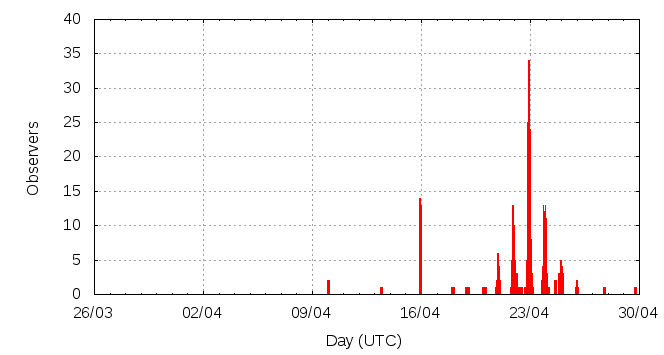

[ www.imo.net ]
This page shows automated results of the Lyrids 2011, based on visual observations by volunteers astronomers collected through the report form of the International Meteor Organization (IMO). The information on this page is generated automatically; for scientific use please refer to manual analyses published in scientific journals (such as WGN). Send your feedback regarding this page to Geert Barentsen.
Page contents:
Page generated: 2011 July 25 at 22:30 UTC.
The graph below shows the ZHR (Zenithal Hourly Rate), which is the number of meteors an observer would see under a very dark sky with the radiant of the shower in zenith.
ZHRmax = 20 based on 951 Lyrids reported in 431 intervals, assuming population index r = 2.1

| Time (UTC) | Solarlon | nINT | nLYR | ZHR | Particle density | |
|---|---|---|---|---|---|---|
| 2011-04-10 00:56 | 19.670 | 6 | 2 | 1 | ±1 | 1 / 109·km3 |
| 2011-04-13 11:07 | 23.030 | 1 | 1 | 3 | ±2 | 4 / 109·km3 |
| 2011-04-15 22:58 | 25.473 | 27 | 33 | 6 | ±1 | 9 / 109·km3 |
| 2011-04-18 00:47 | 27.502 | 8 | 3 | 4 | ±2 | 6 / 109·km3 |
| 2011-04-19 23:32 | 29.405 | 1 | 0 | 9 | ±9 | 13 / 109·km3 |
| 2011-04-20 16:06 | 30.079 | 23 | 9 | 2 | ±1 | 3 / 109·km3 |
| 2011-04-21 16:12 | 31.059 | 29 | 41 | 7 | ±1 | 10 / 109·km3 |
| 2011-04-21 23:03 | 31.338 | 18 | 40 | 7 | ±1 | 10 / 109·km3 |
| 2011-04-22 09:35 | 31.766 | 19 | 41 | 9 | ±1 | 13 / 109·km3 |
| 2011-04-22 21:00 | 32.229 | 25 | 59 | 13 | ±2 | 19 / 109·km3 |
| 2011-04-22 21:44 | 32.259 | 48 | 158 | 17 | ±1 | 24 / 109·km3 |
| 2011-04-22 22:28 | 32.289 | 38 | 117 | 15 | ±1 | 21 / 109·km3 |
| 2011-04-22 23:09 | 32.317 | 27 | 118 | 20 | ±2 | 29 / 109·km3 |
| 2011-04-22 23:59 | 32.351 | 24 | 98 | 18 | ±2 | 26 / 109·km3 |
| 2011-04-23 00:49 | 32.385 | 12 | 49 | 14 | ±2 | 20 / 109·km3 |
| 2011-04-23 16:49 | 33.034 | 27 | 40 | 7 | ±1 | 10 / 109·km3 |
| 2011-04-23 22:32 | 33.267 | 29 | 40 | 6 | ±1 | 9 / 109·km3 |
| 2011-04-24 00:00 | 33.326 | 21 | 40 | 7 | ±1 | 10 / 109·km3 |
| 2011-04-24 10:06 | 33.736 | 22 | 41 | 5 | ±1 | 7 / 109·km3 |
| 2011-04-25 01:05 | 34.344 | 13 | 15 | 2 | ±0 | 3 / 109·km3 |
| 2011-04-26 00:28 | 35.293 | 4 | 3 | 1 | ±0 | 1 / 109·km3 |
| 2011-04-27 18:30 | 36.998 | 4 | 1 | 3 | ±2 | 4 / 109·km3 |
| 2011-04-29 18:28 | 38.942 | 5 | 2 | 5 | ±3 | 7 / 109·km3 |
The reported intervals are automatically added together into the bins shown above, based on the number of meteors and the distribution of the intervals. For each bin, the following parameters are computed:

| Time (UTC) | Solarlon | nINT | nLYR | ZHR | Particle density | |
|---|---|---|---|---|---|---|
| 2011-04-21 21:15 | 31.265 | 25 | 41 | 7 | ±1 | 10 / 109·km3 |
| 2011-04-21 23:24 | 31.352 | 17 | 41 | 7 | ±1 | 10 / 109·km3 |
| 2011-04-22 12:07 | 31.869 | 20 | 42 | 9 | ±1 | 13 / 109·km3 |
| 2011-04-22 20:58 | 32.228 | 15 | 40 | 17 | ±3 | 24 / 109·km3 |
| 2011-04-22 21:21 | 32.244 | 18 | 47 | 16 | ±2 | 23 / 109·km3 |
| 2011-04-22 21:45 | 32.260 | 24 | 77 | 16 | ±2 | 23 / 109·km3 |
| 2011-04-22 22:01 | 32.271 | 18 | 62 | 17 | ±2 | 24 / 109·km3 |
| 2011-04-22 22:21 | 32.285 | 18 | 61 | 16 | ±2 | 23 / 109·km3 |
| 2011-04-22 22:43 | 32.299 | 18 | 50 | 14 | ±2 | 20 / 109·km3 |
| 2011-04-22 23:01 | 32.312 | 13 | 52 | 18 | ±2 | 26 / 109·km3 |
| 2011-04-22 23:22 | 32.326 | 11 | 57 | 24 | ±3 | 34 / 109·km3 |
| 2011-04-22 23:48 | 32.343 | 14 | 41 | 14 | ±2 | 20 / 109·km3 |
| 2011-04-23 00:14 | 32.361 | 9 | 55 | 24 | ±3 | 34 / 109·km3 |
| 2011-04-23 00:47 | 32.383 | 13 | 51 | 14 | ±2 | 20 / 109·km3 |
| 2011-04-23 16:49 | 33.034 | 27 | 40 | 7 | ±1 | 10 / 109·km3 |
| 2011-04-23 22:32 | 33.267 | 29 | 40 | 6 | ±1 | 9 / 109·km3 |
| 2011-04-24 00:00 | 33.326 | 21 | 40 | 7 | ±1 | 10 / 109·km3 |
| 2011-04-24 01:14 | 33.376 | 12 | 27 | 7 | ±1 | 10 / 109·km3 |
Data has been received from 70 observers in 22 countries. Thank you for your efforts!
Note: click on the map for an interactive version.

| Observer | Country | Teff | nLYR |
|---|---|---|---|
| Anastasia Abdolvand | Germany | 6.31h | 21 |
| Tomasz Adam | Poland | 1.80h | 16 |
| Salvador Aguirre | Mexico | 2.00h | 2 |
| Rainer Arlt | Germany | 7.07h | 27 |
| Jure Atanackov | Slovenia | 4.05h | 56 |
| Pierre Bader | Germany | 9.00h | 25 |
| Kinga Bobrowska | Poland | 1.97h | 3 |
| Jens Briesemeister | Germany | 0.58h | 6 |
| Todor Dimitrov | Bulgaria | 2.66h | 11 |
| Dariusz Dorosz | Poland | 4.00h | 21 |
| Audrius Dubietis | Lithuania | 2.95h | 6 |
| Patryk Duchnowski | Poland | 1.97h | 2 |
| Urszula Dzikowicz | Poland | 1.97h | 3 |
| Frank Enzlein | Germany | 7.53h | 38 |
| Balazs Fodor | Hungary | 5.4h | 40 |
| Stela Frencheva | Bulgaria | 3.67h | 16 |
| Sylvie Gorkova | Czech Republic | 5.00h | 8 |
| Mitja Govedic | Slovenia | 2.57h | 18 |
| Lew Gramer | United States | 1.51h | 8 |
| Przemek Grabarczyk | Poland | 1.97h | 2 |
| Wayne T. Hally | United States | 1.00h | 1 |
| Kinga Jagielska | Poland | 1.97h | 3 |
| Milada Jakubecova | Slovakia | 3.47h | 14 |
| Paul Jones | United States | 1.50h | 5 |
| Paul Jones | United States | 1.00h | 2 |
| Javor Kac | Slovenia | 8.64h | 54 |
| Szabolcs Kiss | Hungary | 2.43h | 9 |
| Daria Kokoszka | Poland | 1.97h | 2 |
| Zdenek Komarek | Slovakia | 2.00h | 9 |
| Janusz W. Kosinski | Poland | 2.35h | 28 |
| Roman Kostenko | Ukraine | 3.81h | 24 |
| Jakub Koukal | Czech Republic | 25.50h | 95 |
| Roman Kovalyk | Italy | 10.55h | 11 |
| Patrycja Kr?zel | Poland | 1.97h | 3 |
| Jixia Lee | China | 1.89h | 6 |
| Peter Van Leuteren | Netherlands | 1.75h | 3 |
| Santosh Mahato | India | 5h | 5 |
| Alexandr Maidik | Ukraine | 12.10h | 24 |
| Qiang Ma | China | 3.25h | 10 |
| Adam Marsh | Australia | 4.04h | 3 |
| Pierre Martin | Canada | 0.98h | 4 |
| Paul Meißner | Germany | 5.53h | 24 |
| Vasilis Metallinos | Greece | 1.83h | 13 |
| Katarzyna Mielczarek | Poland | 1.97h | 2 |
| Magdalena Mi?ek | Poland | 1.97h | 3 |
| Koen Miskotte | Netherlands | 9.62h | 6 |
| Sirko Molau | Germany | 1.71h | 4 |
| Marian Mraz | Slovakia | 2.00h | 4 |
| Sven Nather | Germany | 14.84h | 30 |
| Karolina Paprocka | Poland | 0.98h | 1 |
| Dominika P?czek | Poland | 1.97h | 1 |
| Sasha Prokofyev | Russia | 1.00h | 2 |
| Jurgen Rendtel | Germany | 11.31h | 48 |
| Branislav Savic | Serbia | 6.15h | 26 |
| Christian Schmiel | Germany | 4.97h | 31 |
| Sergei Schmalz | Germany | 20.15h | 16 |
| Ivan M. Sergey | Belarus | 2.73h | 14 |
| Dariusz Sitek | Poland | 1.97h | 3 |
| Natalia Smus | Poland | 1.97h | 3 |
| Michal Stefancik | Slovakia | 2.00h | 5 |
| David Strachan | United Kingdom | 2.63h | 0 |
| Richard Taibi | United States | 2.62h | 0 |
| Csilla Tepliczky | Hungary | 5.39h | 27 |
| Istvan Tepliczky | Hungary | 0.52h | 1 |
| Michel Vandeputte | Belgium | 4.50h | 30 |
| Thomas Weiland | Austria | 11.79h | 54 |
| Adam Wroci?ski | Poland | 1.97h | 2 |
| Oliver Wusk | Germany | 2.27h | 17 |
| Weizhou Zeng | China | 0.50h | 1 |
| Bo Zhou | China | 2.00h | 8 |
Create your own analysis. The files below can be opened using Excel:
lyr2011_rate.csv (number of meteors per interval per observer)
lyr2011_magn.csv (number of meteors per magnitude bin per observer)
The information on this page may be distributed freely provided credit is given to the International Meteor Organization (IMO) and, when possible, to the individual observers. The computer facilities to generate this page are provided by ESA/RSSD and Armagh Observatory.
References: